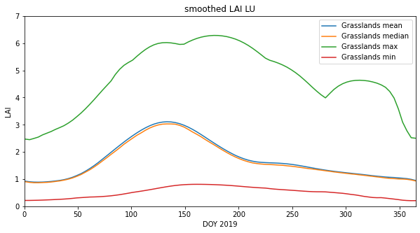

035 Weighted interpolation¶
Introduction¶
Purpose¶
We have seen in 034_Weigthed_smoothing_and_interpolation how we can regularise a dataset using colvolution filtering. We investigate and apply that now to allow us to provide gap-filled datasets.
Prerequisites¶
You must make sure you can recall the details of the work covered in 032_GDAL_mosaicing_and_masking and understand the material in 034_Weigthed_smoothing_and_interpolation. You will also need to know how to do graph plotting, including sub-figures and errorbars, and image display.
Test¶
You should run a NASA account test if you have not already done so.
Smoothing¶
In convolution, we combine a signal $y$ with a filter $f$ to achieve a filtered signal. For example, if we have an noisy signal, we will attempt to reduce the influence of high frequency information in the signal (a ‘low pass’ filter, as we let the low frequency information pass).
We can perform a weighted interpolation by:
numerator = smooth( signal $\times$ weight)
denominator = smooth( weight)
result = numerator/denominator
import gdal
import matplotlib.pyplot as plt
from geog0111.modis_annual import modis_annual
import numpy as np
# load some data
warp_args = {
'dstNodata' : 255,
'format' : 'MEM',
'cropToCutline' : True,
'cutlineWhere' : "FIPS='LU'",
'cutlineDSName' : 'data/TM_WORLD_BORDERS-0.3.shp'
}
sds = ['Lai_500m','LaiStdDev_500m','FparLai_QC']
tile = ['h17v03','h18v03','h17v04','h18v04']
product = 'MCD15A3H'
year = 2019
mfiles = modis_annual(year,tile,product,sds=sds,warp_args=warp_args)
# apply weights as previously
lai = mfiles['Lai_500m'] * 0.1
std = mfiles['LaiStdDev_500m'] * 0.1
std[std<1] = 1
weight = np.zeros_like(std)
mask = (std > 0)
weight[mask] = 1./(std[mask]**2)
weight[lai > 10] = 0.
# look at some stats
print(weight.min(),weight.max())
we dont need to process MCD15A3H._h17v03_h18v03_h17v04_h18v04_.2019
0.0 1.0
import matplotlib.pyplot as plt
error = np.zeros_like(weight)
error[weight>0] = np.sqrt(1./(weight[weight>0] )) * 1.97
doy = [int(i.split('-')[1]) for i in mfiles['bandnames']]
p0,p1 = (107,72)
x_size,y_size=(10,5)
shape=(10,10)
fig, axs = plt.subplots(1,1,figsize=(x_size,y_size))
x = doy
axs.errorbar(x,lai[:,p0,p1],yerr=error[:,p0,p1]/10)
axs.set_title(f'{p0} {p1}')
# ensure the same scale for all
axs.set_ylim(0,7)
axs.set_xlabel('DOY 2019')
axs.set_ylabel('LAI')
Text(0, 0.5, 'LAI')

import scipy
import scipy.ndimage.filters
sigma = 5
x = np.arange(-3*sigma,3*sigma+1)
gaussian = np.exp((-(x/sigma)**2)/2.0)
plt.plot(x,gaussian)
numerator = scipy.ndimage.filters.convolve1d(lai * weight, gaussian, axis=0,mode='wrap')
denominator = scipy.ndimage.filters.convolve1d(weight, gaussian, axis=0,mode='wrap')
# avoid divide by 0 problems by setting zero values
# of the denominator to not a number (NaN)
denominator[denominator==0] = np.nan
interpolated_lai = numerator/denominator

p0,p1 = (107,72)
x_size,y_size=(10,5)
fig, axs = plt.subplots(1,1,figsize=(x_size,y_size))
x = doy
axs.plot(x,interpolated_lai[:,p0,p1],'r--',label='smoothed LAI')
axs.plot(x,lai[:,p0,p1],'+',label='LAI')
axs.plot(x,weight[:,p0,p1],'+',label='weight')
axs.set_title(f'{p0} {p1}')
# ensure the same scale for all
axs.set_ylim(0,7)
axs.set_xlabel('DOY 2019')
axs.set_ylabel('LAI')
axs.legend(loc='best')
<matplotlib.legend.Legend at 0x7fdf13c5c890>

# Plot the interpolated_lai
import matplotlib.pyplot as plt
shape=(12,8)
x_size,y_size=(20,30)
fig, axs = plt.subplots(*shape,figsize=(x_size,y_size))
axs = axs.flatten()
plt.setp(axs, xticks=[], yticks=[])
for i in range(interpolated_lai.shape[0]):
im = axs[i].imshow(interpolated_lai[i],vmax=7,cmap=plt.cm.inferno_r,\
interpolation='nearest')
axs[i].set_title(mfiles['bandnames'][i])
fig.colorbar(im, ax=axs[i])

import matplotlib.pyplot as plt
x_size,y_size=(20,20)
shape=(10,10)
fig, axs = plt.subplots(*shape,figsize=(x_size,y_size))
plt.setp(axs, xticks=[], yticks=[])
pixel = (100,70)
x = doy
for i in range(shape[0]):
p0 = pixel[0] + i
for j in range(shape[1]):
p1 = pixel[1] + j
axs[i,j].plot(x,interpolated_lai[:,p0,p1])
axs[i,j].plot(x,lai[:,p0,p1],'+')
axs[i,j].set_title(f'{p0} {p1}')
# ensure the same scale for all
axs[i,j].set_ylim(0,7)

data mask¶
Although these datasets look complete when we plot them, it is still possible that some pixels have no valid data points or invalid pixels. Earlier, we set
denominator[denominator==0] = np.nan
so we would expect invalid pixels to contain np.nan. We can build a mask for these pixels, for example by summing along the time axis (axis 0):
mask = np.sum(interpolated_lai,axis=0)
This will build a 2D dataset that is np.nan if incvalid. We can then use ~np.isnan to build a boolean mask. The ~ symbol is the same as doing np.logical_not() in this context. It will be True where invalid, and False where valid:
mask = ~np.isnan(np.sum(interpolated_lai,axis=0))
x_size,y_size=(10,10)
fig, axs = plt.subplots(1,1,figsize=(x_size,y_size))
x = doy
axs.imshow(mask)
axs.set_title('data mask')
Text(0.5, 1.0, 'data mask')

Lets now load some land cover data:
We will use LC_Type3 as this is the classification associated with the LAI product. You will find a CSV file defining the LC types in data/LC_Type3_colour.csv.
from geog0111.modis import Modis
# LU
kwargs = {
'tile' : ['h17v03', 'h18v03','h17v04', 'h18v04'],
'product' : 'MCD12Q1',
}
year = 2019
doy = 1
# get the data
modis = Modis(**kwargs)
warp_args = {
'dstNodata' : 255,
'format' : 'MEM',
'cropToCutline' : True,
'cutlineWhere' : "FIPS='LU'",
'cutlineDSName' : 'data/TM_WORLD_BORDERS-0.3.shp'
}
# specify day of year (DOY) and year
lcfiles = modis.get_modis(year,doy,warp_args=warp_args)
lcfiles.keys()
dict_keys(['LC_Prop1', 'LC_Prop1_Assessment', 'LC_Prop2', 'LC_Prop2_Assessment', 'LC_Prop3', 'LC_Prop3_Assessment', 'LC_Type1', 'LC_Type2', 'LC_Type3', 'LC_Type4', 'LC_Type5', 'LW', 'QC', 'bandnames'])
import pandas as pd
# read the colour data
lc_Type3 = pd.read_csv('data/LC_Type3_colour.csv')
lc_Type3
| code | colour | class | description | |
|---|---|---|---|---|
| 0 | 0 | #1c0dff | Water Bodies | at least 60% of area is covered by permanent w... |
| 1 | 1 | #b6ff05 | Grasslands | dominated by herbaceous annuals (<2m) includin... |
| 2 | 2 | #dcd159 | Shrublands | shrub (1-2m) cover >10%. |
| 3 | 3 | #c24f44 | Broadleaf | Croplands: bominated by herbaceous annuals (<2... |
| 4 | 4 | #fbff13 | Savannas | between 10-60% tree cover (>2m). |
| 5 | 5 | #086a10 | Evergreen Broadleaf Forests | dominated by evergreen broadleaf and palmate t... |
| 6 | 6 | #78d203 | Deciduous Broadleaf Forests | dominated by deciduous broadleaf trees (canopy... |
| 7 | 7 | #05450a | Evergreen Needleleaf Forests | dominated by evergreen conifer trees (canopy >... |
| 8 | 8 | #54a708 | Deciduous Needleleaf Forests | dominated by deciduous needleleaf (larch) tree... |
| 9 | 9 | #f9ffa4 | Non-Vegetated Lands | at least 60% of area is non-vegetated barren (... |
| 10 | 10 | #a5a5a5 | Urban and Built-up Lands | at least 30% impervious surface area including... |
| 11 | 255 | #000000 | Unclassified | NaN |
# generate matplotlib cmap and norm objects from these
# as in session 024
import matplotlib
import matplotlib.patches
cmap = matplotlib.colors.\
ListedColormap(list(lc_Type3['colour']))
norm = matplotlib.colors.\
BoundaryNorm(list(lc_Type3['code']), len(lc_Type3['code']))
# set up the legend
legend_labels = dict(zip(list(lc_Type3['colour']),list(lc_Type3['class'])))
patches = [matplotlib.patches.Patch(color=c, label=l)
for c,l in legend_labels.items()]
import gdal
import numpy as np
# read the LC_Type3 dataset
g = gdal.Open(lcfiles['LC_Type3'])
land_cover = g.ReadAsArray()
print(np.unique(land_cover))
print(lcfiles['LC_Type3'])
[ 1 3 4 5 6 7 10 255]
/shared/groups/jrole001/geog0111/work/MCD12Q1/data.LC_Type3._h17v03_h18v03_h17v04_h18v04_.2019.001.001_warp.vrt
# plot
import matplotlib.pyplot as plt
x_size,y_size=(10,10)
fig, axs = plt.subplots(1,figsize=(x_size,y_size))
im = axs.imshow(land_cover,cmap=cmap,norm=norm,interpolation='nearest')
plt.legend(handles=patches,
bbox_to_anchor=(1.6, 1),
facecolor="white")
<matplotlib.legend.Legend at 0x7fdf10066150>

We can now consider masking both for valid pixels and for a particular land cover type.
# get the code for Grasslands
# might be easier to look in the table ...
# but we can extract it
classy = 'Grasslands'
code = int(lc_Type3['code'][lc_Type3['class'] == classy])
print(f'code for {classy} is {code}')
code for Grasslands is 1
# code
code_mask = (land_cover == code)
valid_mask = ~np.isnan(np.sum(interpolated_lai,axis=0))
# combine
mask = np.logical_and(code_mask,valid_mask)
masked_lai = interpolated_lai[:,mask]
print(masked_lai.shape)
(92, 2661)
Notice how we used interpolated_lai[:,mask] to apply the mask to the last 2 dimensions of the `interpolated_laia dataset. The result is 2D, the first dimension being the number of time samples.
Now, take the mean, over axis 1:
mean_lai = np.mean(interpolated_lai[:,mask],axis=(1))
median_lai = np.median(interpolated_lai[:,mask],axis=(1))
max_lai = np.max(interpolated_lai[:,mask],axis=(1))
min_lai = np.min(interpolated_lai[:,mask],axis=(1))
# get the doy data as above
doy = np.array([int(i.split('-')[1]) for i in mfiles['bandnames']])
# check they have the same shape before we plot them!
grass_lai.shape,doy.shape
((92,), (92,))
# plot
x_size,y_size=(10,5)
fig, axs = plt.subplots(1,1,figsize=(x_size,y_size))
x = doy
axs.plot(x,mean_lai,label=f"{classy} mean")
axs.plot(x,median_lai,label=f"{classy} median")
axs.plot(x,max_lai,label=f"{classy} max")
axs.plot(x,min_lai,label=f"{classy} min")
axs.set_title(f'smoothed LAI LU')
# ensure the same scale for all
axs.set_ylim(0,7)
axs.set_ylabel('LAI')
axs.set_xlabel('DOY 2019')
axs.set_xlim(0,365)
axs.legend(loc='upper right')
<matplotlib.legend.Legend at 0x7fdf018ee750>

Exercise 1¶
Produce plots of summary statistics for each land cover in the dataset
Compare LAI for two countries withing the bounds of the dataset, for given land cover classes.
Summary¶
From this session, you should be able to acquire a MODIS timeseries dataset and associated land cover map. You should be able to treat the data, so that by defining a weight for weach observation, you can produce a regularised (smoothed, interpolated) dataset from original noisy observations. In this case, we used variable weighting, according to an uncertainty measure, but if that is not available, you can simply use a weight of 1 for a valid observation and 0 when there is no valid value.
You should then be able to calculate statistics from the data. You should be capable of doing this for any MODIS geophysical variable, and also of developing functiuons that bring some of these ideas together into more compact, reusable code.